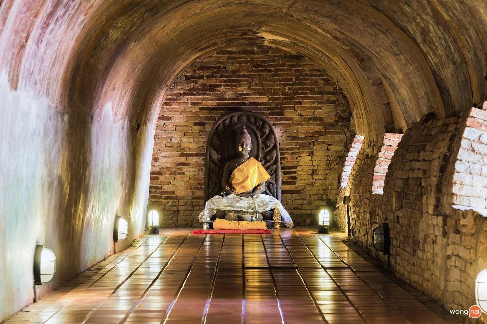
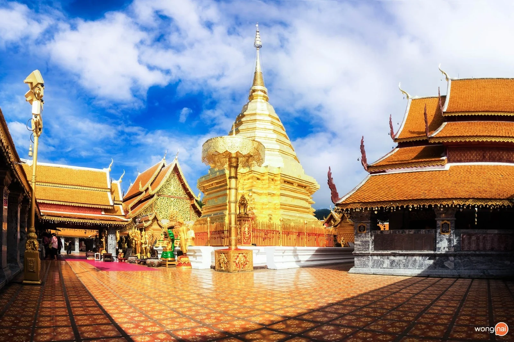

สถานที่ท่องเที่ยวทางวัฒนธรรม
วัดพระธาตุดอยคำ

"วัดพระธาตุดอยคำ" ศาสนสถานที่ขึ้นชื่ออีกหนึ่งที่ของอำเภอเชียงใหม่ ใช้ระยะเวลาการเดินทางจากวัดพระธาตุดอยสุเทพฯประมาณ 40 นาที เป็นที่ประดิษฐานของหลวงพ่อทันใจ ซึ่งมีอายุกว่า 500 ปี อยู่คู่กับคนเชียงใหม่มาช้านาน
การเดินทาง:ถนน หมู่บ้านเชียงใหม่เลคแลนด์ เชียงใหม่ เข้าทางถนนเลียบคลองชลประทาน แยกจากถนนเชิงดอยบริเวณตลาดต้นพะยอมไปทางทิศใต้ประมาณ 6 กิโลเมตร
เวลาเปิด-ปิด : ทุกวัน 06.00 น. - 18.00 น.
ฤดูกาลแนะนำ : ตุลาคม - ธันวาคม
ช่วงเวลาที่ดีที่สุด :09.00 - 11.00 น.
อัตราค่าเข้า:ฟรี
วัดอุโมงค์(วัดสวนพุทธธรรม)

วัดโบราณสมัยสุโขทัยตั้งอยู่บริเวณด้านหลังมหาวิทยาลัยเชียงใหม่ห่างจากวัดพระธาตุสุเทพฯ และวัดโดยคำเพียง 10 กว่ากิโลเมตร "วัดอุโมงค์ หรือ วัดสวนพุทธธรรม"เป็นที่ประดิษฐานพระพุทธรูปโบราณอยู่หลายองค์และยังมีพิพิธภัณฑ์เฉลิมพระเกียรติ
ในพิพิธภัณฑ์จะมีพระพุทธรูปหนังสือโบราณและองค์พระต่างๆ เก็บรักษาไว้
การเดินทาง:135 หมู่ที่10 ซอยบ้านใหม่หลังมช.ผ่านสี่แยกคลองชลประทานด้านหลังม.เชียงใหม่ ประมาณ 500 เมตร เข้าซอยทางด้านซ้ายมือไปอีกประมาณ 2 กิโลเมตร
เวลาเปิด-ปิด : ทุกวัน 06.00 น. - 18.00 น.
ฤดูกาลแนะนำ : ทุกฤดูกาล
ช่วงเวลาที่ดีที่สุด :09.00 - 11.00 น.
อัตราค่าเข้า:ฟรี
วัดพระธาตุดอยสุเทพราชวรวิหาร

"วัดพระธาตุดอยสุเทพฯ"อีกหนึ่งแลนด์มาร์กสำคัญของจังหวัดเชียงใหม่ ใครที่มาเที่ยวเชียงใหม่แต่ไม่ได้มากราบไหว้ก็เหมือนมาไม่ถึง พร้อมกับเยี่ยมชมสถาปัตยกรรมแบบล้านนาจากการสร้างเจดีย์ทรงเชียงแสนและชื่นชมความงามของจังหวัดเชียงใหม่จากจุดชมวิวบนวัดพระธาตุดอยสุเทพฯแห่งนี้ ลงจากดอยสุเทพมุ่งหน้าต่อไปที่เขตติดต่อแม่ริมยังมีอีกหนึ่งวัดให้สักการะขอพรกันอย่างเต็มที่
การเดินทาง:จากอำเภอเมืองเชียงใหม่ไปตามถนนห้วยแก้ว-มหาวิทยาลัยเชียงใหม่ผ่านสวนสัตว์เชียงใหม่และผ่านอนุสาวรีย์ครูบาศรีวิชัย
เวลาเปิด-ปิด : ทุกวัน 06.00 น. - 18.00 น.
ฤดูกาลแนะนำ : พฤศจิกายน - ธันวาคม
ช่วงเวลาที่ดีที่สุด : 09.00 - 11.00 น.
อัตราค่าเข้า 20 บาท/คน (ค่าบริการรถราง)